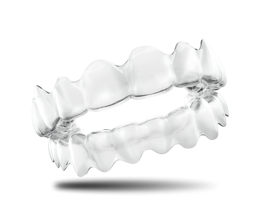

Cómodo
Cómodo
La mejor solución para imperfecciones como:


El efecto es notable después de 2 semanas
Corrección de maloclusión y enderezamiento de los dientes es un proceso minucioso, pero gracias a nuestras tecnologías, ¡verá los primeros resultados después de 2 semanas!
Ventajas de los alineadores Hollywood smile
 Estética
Estética
Los alineadores son transparentes y siguen con precisión la forma de sus dientes.
 Comodidad
Comodidad
Adaptación a los alineadores ocurre en cuestión de horas. No producen dificultades de dicción. Puede quitarlos usted mismo en cualquier momento.
Hollywood smile está hecho de un material médico especial del que están hechos goteros, tubos y siliconas. Estos materiales no causan alergias.

 Fácil de usar
Fácil de usar
Los alineadores se quitan durante las comidas. Después, basta con enjuagar los alineadores con agua y cepillarse los dientes.
 Seguridad
Seguridad
La alineación de los dientes con férula dental se logra mediante una presión suave. No daña el esmalte ni hacen heridas en las encías.
Hollywood smile es una tecnología médica moderna que se ha convertido en una excelente alternativa a los brackets. Por lo tanto, para enderezar los dientes, la mayoría de las personas eligen cada vez más alineadores transparentes.
Alineadores de dientes: ¿que son?

Los alineadores son transparentes, flexibles que se aplican sobre toda la dentición. Se parecen a las ferulas que se utilizan para blanquear los dientes. Se puede poner y quitar por sí mismo, sin dolor alguno. A diferencia de los brackets, no es necesario usarlos todo el tiempo. Los alineadores se pueden quitar antes de comer o lavarse los dientes.
¿Cómo funcionan los alineadores Hollywood smile?
La superficie interior de los alineadores sigue con precisión la forma de los dientes, teniendo en cuenta su micromovilidad. El efecto de este dispositivo sobre los dientes es muy suave e imperceptible.
¿Para quién son adecuados los alineadores Hollywood smile?

La dentición torcida conduce no solo a deficiencias estéticas en la apariencia, sino que también afecta la salud de la persona en general. El aumento de la carga en una de las zonas durante la masticación debido a la maloclusión conduce a enfermedades periodontales, caries, erosión del esmalte dental.
Opiniones de los alineadores Hollywood smile
Ana Maria
 5.0
5.0

Buenas tardes, he estado usando alineadores durante un par de meses. Mis impresiones: te acostumbras rápido, en un par de días. Al principio es inusual, pero luego dejas de sentir los alineadores por completo. La dicción no ha cambiado. El factor decisivo para la elección fue la invisibilidad de los alineadores. Te tomas fotos y no se ve nada. Ya se ve el resultado. Recomiendo.
Pilar
5.0

No estaba satisfecha con cómo se sobresalían los dientes frontales superiores: sobresalían notablemente hacia adelante. En solo 6 meses me deshice de este problema. Los alineadores son invisibles y son muy fáciles de cuidar. ¡Estoy muy contenta!
Cristina
5.0

Quería arreglar la mordida, obtener un efecto estético. Estaba preocupada por cómo negociar con los socios después de instalar los aparatos ortopédicos. Los alineadores se convirtieron en la salida perfecta. La solución fue fácil y sin dolor: sin la incomodidad que se esperaba. Recomiendo!
Andrés
5.0

No quería usar aparatos ortopédicos: no me gustaba la idea de ir a reuniones o negociaciones con ellos. Cuando me enteré de que había una alternativa, encargue de inmediato los alineadores transparentes. Antes de la reunión, puedo quitar los alineadores y sentirse cómodo. Incluso si no me los quito, mis interlocutores no se dan cuenta. No hay complicaciones. Estoy muy contento, los recomiendo a todos.
¿Cómo hacer un pedido?

Deje una solicitud en el sitio

Espere la llamada del encargado

Pagar al recibir